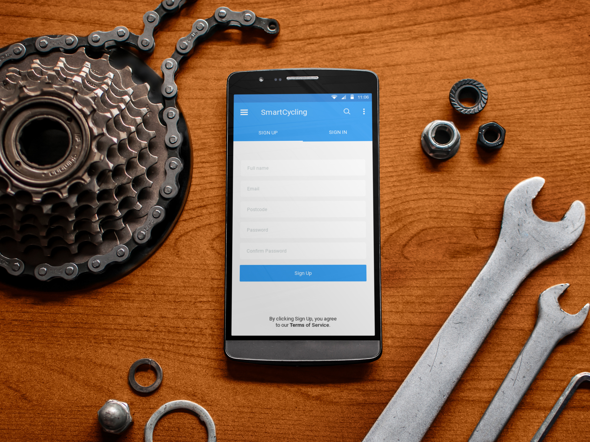
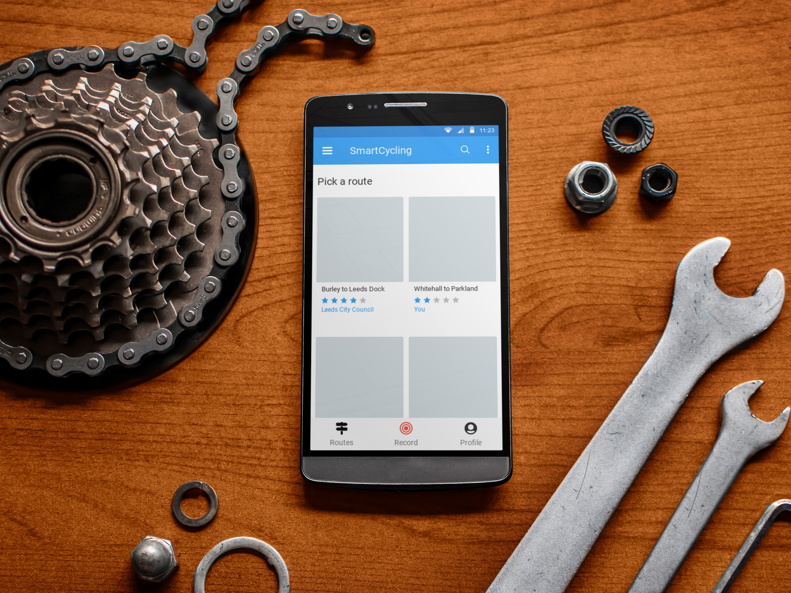
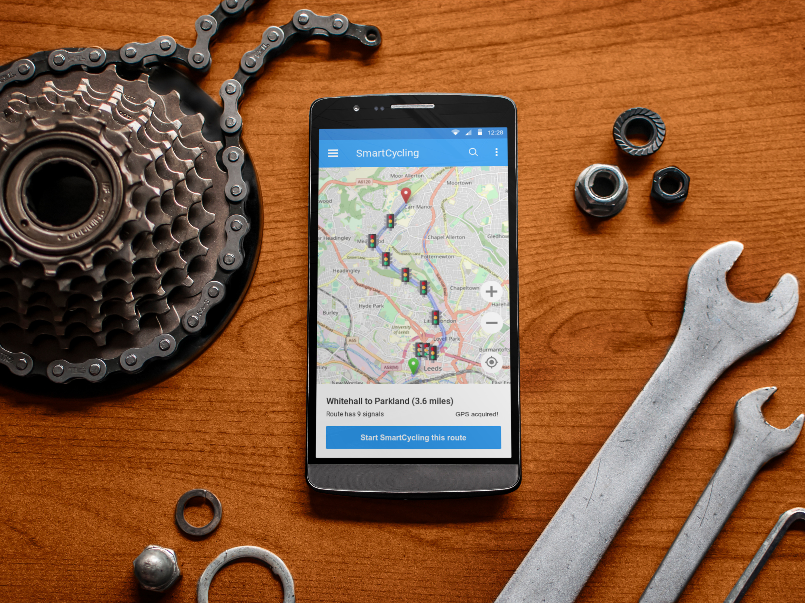
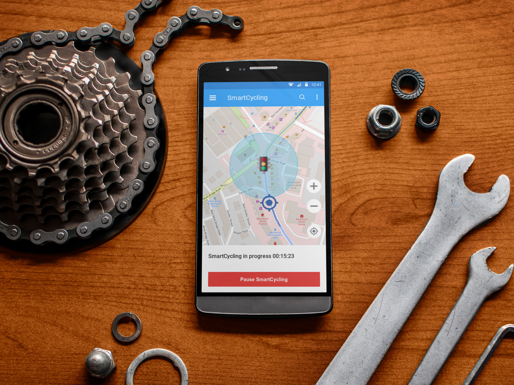
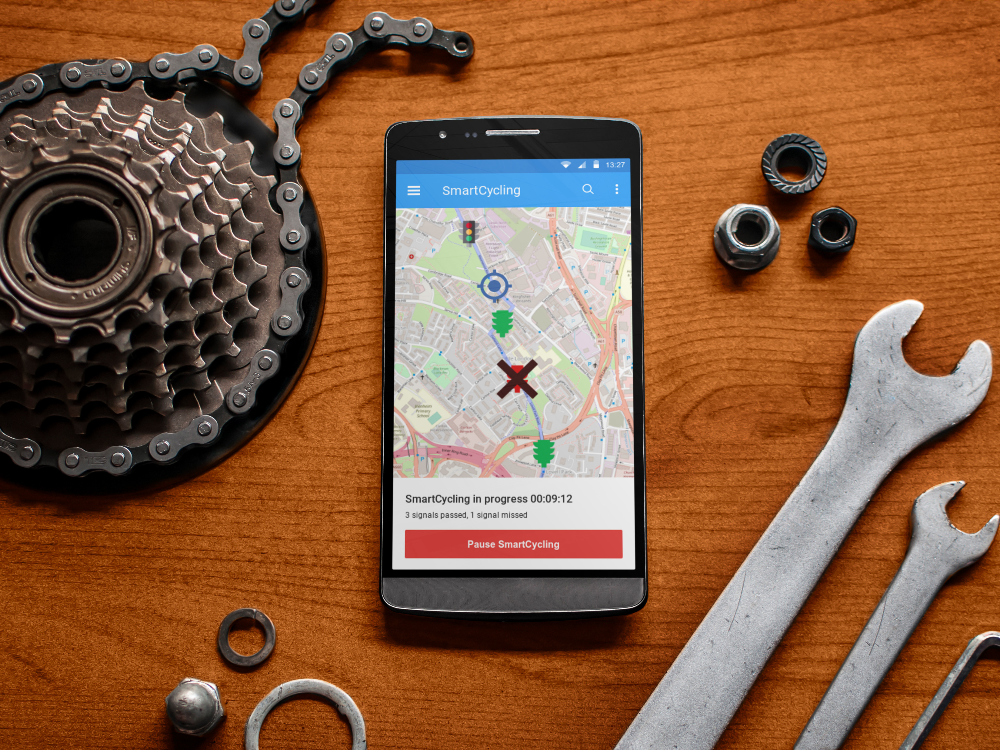
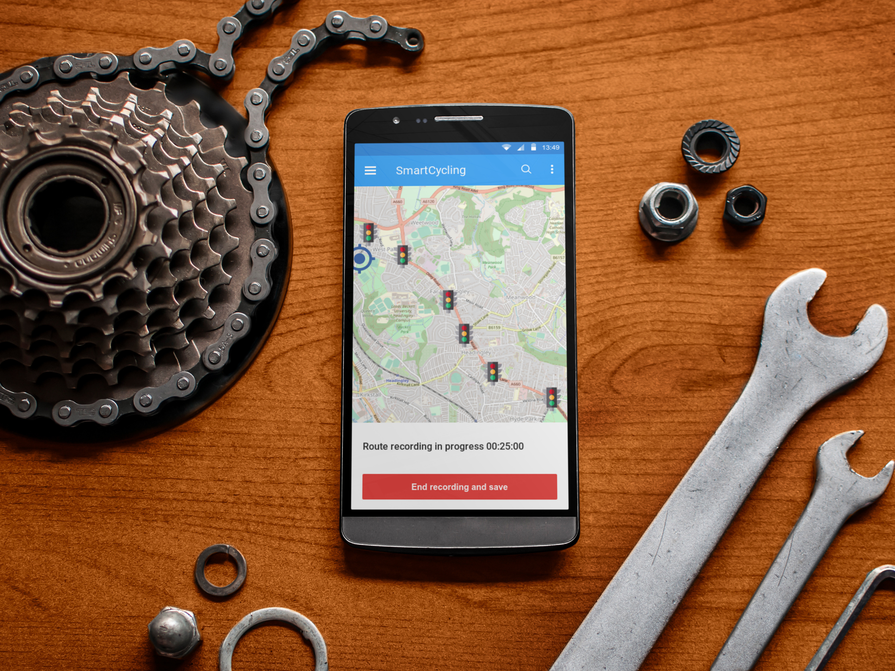
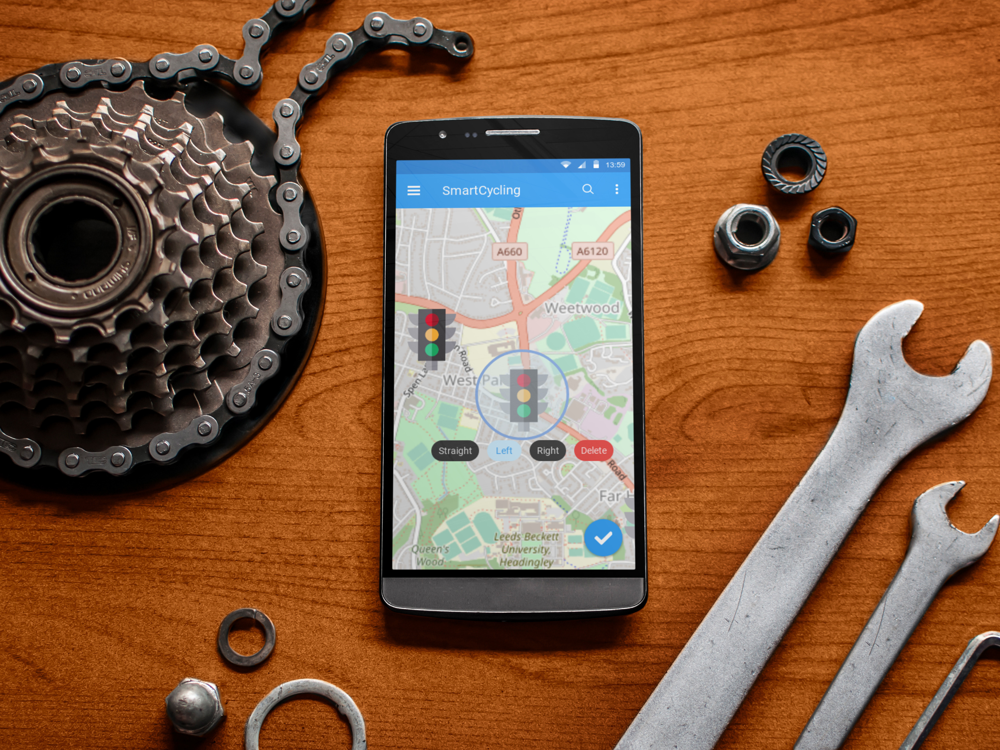
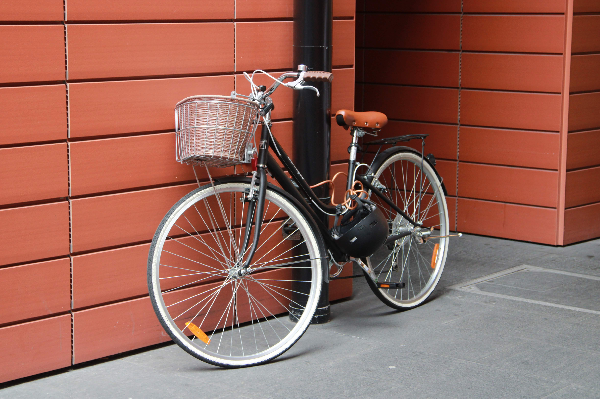

Smart Cycling: Prioritization
Quinn Daley
Problems to overcome
Getting the info early enough
Which direction the cyclist wants to turn
Limit of 100 geofences on Android
Knowing user is a cyclist and not a driver
User experience
Users without Android phones
An app design
(Press space to advance, and type 's' to read notes)
User registration

Pre-drawn routes

Initiating a journey

On approach to a signal

Feedback in the app

Auto-ending journey
Record mode

Manually editing journeys

Technical details
Set up Android geofences when journey begins
Send message to SmartCycling server when entering geofence
Message converted to RTIG-UTMC format including "movement"
App needs to be aware of signal IDs and movement IDs
App can use ActivityRecognitionClient to identify drivers looking to abuse priority
Smallest first step
Identify popular route
Hardcode that route in both directions
Need signal / movement IDs and geofence radius
Build app with just start/stop and route choice
No feedback / editing
Thanks!
